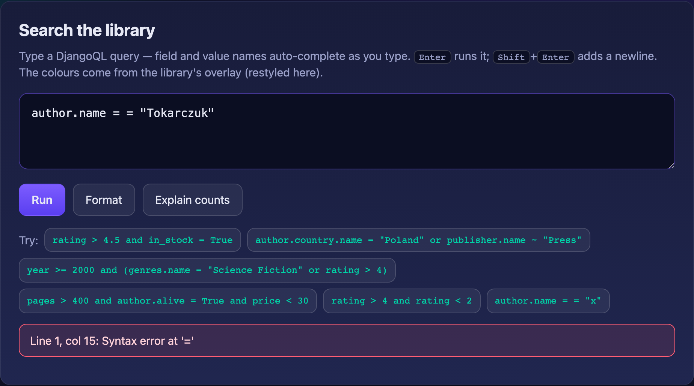

Syntax highlighting¶
DjangoQL queries read like a small language, so colouring them helps. DjangoQL supports highlighting generically — it ships the building blocks but imposes no colour scheme and no editor. You can use the lightweight overlay that comes with it, restyle that overlay, or drive your own editor (CodeMirror, Prism, …) from the tokenizer.
Primitive: DjangoQLHighlight.tokenize¶
djangoql/js/highlight.js exposes a pure tokenizer that mirrors the DjangoQL
grammar:
DjangoQLHighlight.tokenize('author.name ~ "Lem" and year >= 1960');
// [
// { type: 'name', value: 'author.name', start: 0, end: 11 },
// { type: 'ws', value: ' ', start: 11, end: 12 },
// { type: 'operator', value: '~', start: 12, end: 13 },
// ...
// ]
Token types: name, string, number, logical (and/or/not),
operator (= != > >= < <= ~ !~ in startswith endswith),
bool (True/False), none (None), paren, comma, ws, and error
for an unrecognised character. Tokenizing is lossless: concatenating the token
values reproduces the input exactly.
The file is UMD, so the tokenizer is also importable in Node (e.g. for tests):
const DjangoQLHighlight = require('djangoql/static/djangoql/js/highlight.js');
Use the tokens to feed any editor or renderer of your choice.
Default overlay¶
For a drop-in option, attachOverlay paints a colour layer behind a
<textarea> (a transparent-text overlay kept in sync on input/scroll/resize),
so the completion widget keeps working underneath:
<textarea class="djangoql-highlight"></textarea>
<link rel="stylesheet" href="{% static 'djangoql/css/highlight.css' %}">
<script src="{% static 'djangoql/js/highlight.js' %}"></script>
Textareas with the djangoql-highlight class are wired up automatically. Or do
it explicitly:
DjangoQLHighlight.attachOverlay(document.querySelector('textarea'));
attachOverlay returns a handle with repaint(), setError(offset),
setErrorAt(line, column), and clearError().
Marking a syntax-error location¶
When a query fails to parse, DjangoQL errors carry a 1-based line and
column (see DjangoQLError.line / .column). Feed them to the overlay to
flag the offending token with a red squiggle (the .dql-tok-errormark class,
restyleable via --dql-error-mark / --dql-error-mark-bg); typing clears it:
var overlay = DjangoQLHighlight.attachOverlay(textarea);
// ... on a parse error reported by your endpoint:
overlay.setErrorAt(err.line, err.column);

DjangoQLHighlight.offsetFromLineColumn(text, line, column) is also exported if
you need the raw character offset.
Colours are overridable¶
highlight.css carries structural rules (the overlay layout) plus a
default palette expressed as CSS custom properties. Recolour everything by
redefining the variables — no need to touch the library:
.dql-highlight-backdrop {
--dql-name: #2aa198;
--dql-string: #859900;
--dql-logical: #b58900;
--dql-operator: #dc322f;
--dql-number: #6c71c4;
}
Or override the .dql-tok-* rules directly. DjangoQL only provides sensible
defaults so the overlay works out of the box; the look is yours.
In the Django admin (opt-in)¶
Highlighting is off by default in the admin — it is not needed there, and an overlay can interfere with the completion widget's layout, so turning it on is a deliberate choice:
class BookAdmin(DjangoQLSearchMixin, admin.ModelAdmin):
djangoql_highlight = True
That loads highlight.js/highlight.css, tags the search box with
djangoql-highlight, and attaches the overlay. Recolour via the CSS variables
above.
Editor choice is yours
The library gives you a tokenizer and an optional overlay. Whether to use
the overlay, restyle it, or drive your own editor from tokenize() is the
integrator's decision. The example_project/ shows the restyled overlay
alongside the completion widget.